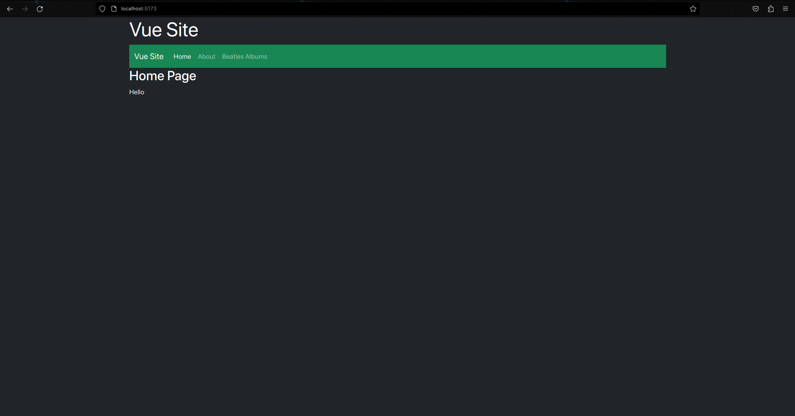
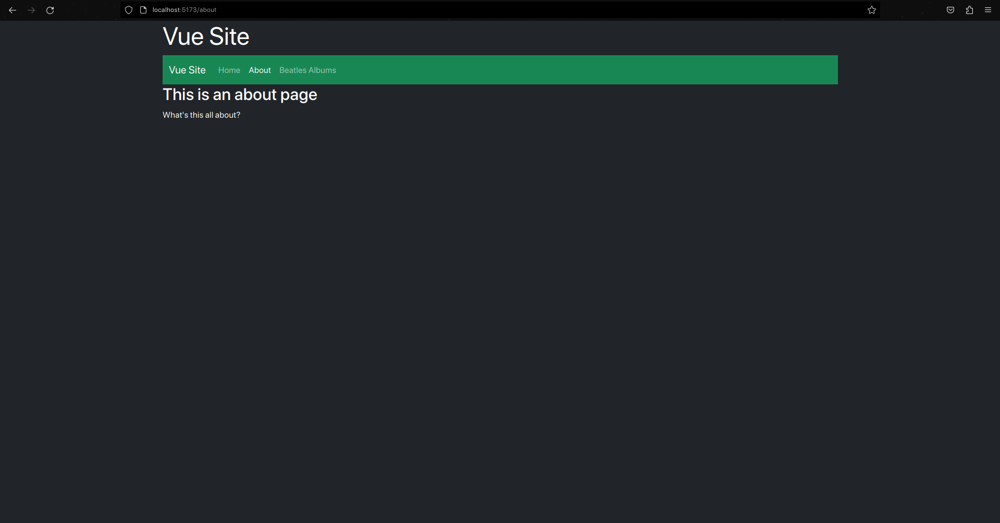

Vue
Introduction
Vue is a simplistic framework that known for it's small learning curve and use single fingle components. Vue, and the front-end build tool Vue uses, Vite was created by Evan You (You, n.d.).
How it works
Vue uses views and components to display data. The entry point is index.html, which has a script tag linked to the main.js file. The main.js file builds app.vue which is a single file component, this means that it can the template (the HTML to display, surrounded in template tags) and include CSS and TypeScript/JavaScript specific to that component. Vue has RouterView and RouterLink tags to define where the views are positioned in the base app.vue component and to display links that will navigate the RouterView to a specified view. The HTML in the components are inside of template tags, which Vue converts into optimized JavaScript.
Figure 7
Vue Logo

(You, 2016).
Strengths and Weaknesses
Strengths
-
Due to the creator of Vue being Chinese, it has quality documentation in Chinese (Cromwell, 2017).
-
Vue uses a virtual DOM, which is faster than a real DOM.
-
Vue is easy to learn and has a small learning curve.
Weaknesses
-
Vue is less known than other frameworks like React and Angular, so there it has a smaller community.
-
Vue doesn't have a built-in state manager, so you have to use a third party library like Vuex or Pinia.
-
Vue doesn't have a built-in router, so you have to use a third party library like Vue Router.
Example Web App
Vue was fairly simple to understand, as it's default app came with the Vue Router set up. I had to untangle the mess that was the home page, which was split into many components. I made a site that has a home page, an about page and a page to display The Beatle's albums from a JSON I found online. A lot of the syntax I used regarding the props and JSON I had to look up, with many of the examples online being dissimilar to each other.
As seen below, (unfortunately in alphabetical order) App.vue contains a site heading and navigation bar, and the RouterView tag which displays the content of the selected view. index.js contains the routes for the views. The home page is the default view, and the about page and albums page are set to a path, which is "lazily" loaded to only load when it is viewed, which is faster than loading all the pages at once, and a good feature for large-scale applications. The home and about pages have minimal content, but the albums page uses a component called Album.vue to generate an image with some text for each album, and the data is pulled from the JSON file and looped through to generate each album.
It took a long time to make the default export for the Album.vue component. At first I only had the return part at the top, then the created part and finally to get it working, props. The div has a data-tilt attribute because I was trying to import tilt.js through script tags, but gave up when it stopped working.
Some of the conventions such as when you are binding data to an element's attribute, you have to put a colon before the name, and use quotes to reference the data, but when you are binding data to the content of an element such as a paragraph's text, you use double curly braces.
Gallery
The Home Page
The About Page
The Beatles Albums Page